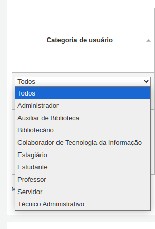
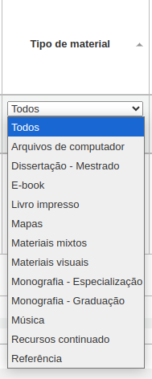
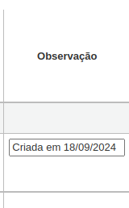
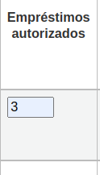
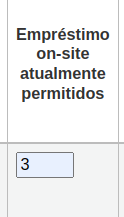
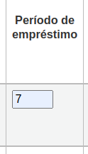
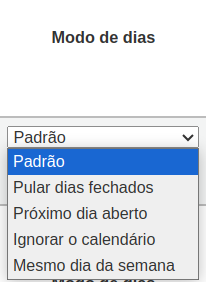
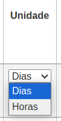

Regras de circulação e multa
As regras definem como seus itens irão circular (empréstimos e devoluções), como e quando as multas são calculadas (se for o caso) e como as reservas são tratadas.
Obs:
Somente funcionários com a permissão 'manage_circ_rules' ou com permissão de 'superlibrarian' terão acesso a esta seção.
As regras são aplicadas da mais específica para a menos específica, usando a primeira encontrada nesta ordem:
- Mesma biblioteca, mesma categoria de usuários, mesmo tipo de item
- Mesma biblioteca, mesma categoria de usuários, todos os tipos de itens
- Mesma biblioteca, todas as categorias de usuários, mesmo tipo de item
- Mesma biblioteca, todas as categorias de usuários, todos os tipos de itens
- Padrão (todas as bibliotecas), mesma categoria de usuários, mesmo tipo de item
- Padrão (todas as bibliotecas), mesma categoria de usuários, todos os tipos de itens
- Padrão (todas as bibliotecas), todas as categorias de usuários, mesmo tipo de item
- Padrão (todas as bibliotecas), todas as categorias de usuários, todos os tipos de itens
As preferênas do sistema 'CircControl' e o HomeOrHoldingBranch devem configuradas para definir qual regra de circulação seguir:
- Se CircControl estiver definido como “a biblioteca na qual você está conectado”, as regras de circulação serão selecionadas com base na biblioteca na qual você está conectado
- Se CircControl for definido como “a biblioteca de onde o usuário é”, as regras de circulação serão selecionadas com base na biblioteca do usuário
- Se CircControl for definido como "a biblioteca de onde o item é", as regras de circulação serão selecionadas com base na biblioteca do item, onde HomeOrHoldingBranch escolhe se a biblioteca inicial do item ou sua biblioteca de retenção será usada.
- Se IndependentBranches estiver definido como 'Prevent', o valor de HomeOrHoldingBranch será usado para descobrir se o item pode ser retirado. Se a biblioteca inicial do item não corresponder à biblioteca registrada, o item não poderá ser retirado, a menos que você tenha a permissão de superlibrarian.
Importante!
É preciso definir, no mínimo, uma regra de circulação padrão. Ela servirá para todos os tipos de itens, todas as bibliotecas e todas as categorias de usuários. Ou seja, a Biblioteca que não possuir regras de circulação específicas utilizarão a regra padrão.
Definição de regras de circulação
Ao usar matriz de regras de circulação, você pode definir regras que dependem de combinações de categorias de usuários/tipos de itens.
Obs:
Como a matriz é muito ampla, você pode exportar as regras existentes no formato Microsoft Excel ou CSV para consultá-las usando o botão "Exportar" na parte superior da tabela.
Para definir suas regras, escolha uma biblioteca no menu suspenso (ou 'Regras padrão para todas as bibliotecas' se quiser aplicar essas regras a todas bibliotecas de uma Rede):

Na matriz, você pode escolher qualquer combinação de categorias de usuários e tipos de itens para aplicar as regras

Primeiro, escolha a qual categoria de usuários você gostaria que a regra fosse aplicada. Se você deixar isso em 'Todos', ela será aplicada a todas as categorias de usuários
Selecione o tipo de item ao qual você gostaria que esta regra se aplicasse. Se você deixar isso como 'Todos', ela será aplicada a todos os tipos de itens para esta categoria de usuários
Adicione nota/Observação sobre sua regra de circulação. Isso pode ser útil para lembrar quando uma regra foi criada ou alterada. Ou, faça qualquer outra Observação
Defina o quantitativo total de itens que um usuário desta categoria pode retirar ao mesmo tempo, inserindo um número no campo 'Empréstimos autorizados'.
Se a biblioteca permitir empréstimo local, é preciso definir um limite para o número de itens que os usuários dessa categoria possam ler/pesquisar no local. Em 'Empréstimo on-site atualmente permitidos'
Obs:
Esta configuração também depende da preferência ConsiderOnSiteCheckoutsAsNormalCheckouts
Defina o período de tempo em que um item deste tipo pode ser emprestado para um usuário desta categoria. Insira o número de unidades (dias ou horas) na caixa 'Período de empréstimo'.
📍 Defina se o período de empréstimo deve incluir dias fechados ou não na coluna 'Modo de dias'. A opção escolhida aqui substituirá a preferência do sistema useDaysMode para esta regra em particular.
- A opção 'Padrão' usará a opção definida na preferência do sistema useDaysMode
- Selecione a opção 'Calendário' se quiser usar o calendário para pular os dias em que a biblioteca está fechada
- Selecione a opção 'Data de vencimento' se quiser adiar a data de vencimento para o próximo dia útil
- Escolha a opção 'Dias' se quiser ignorar o calendário e calcular a data de vencimento diretamente
- Selecione a opção 'Dia da semana' se quiser usar o calendário para adiar a data de vencimento para o próximo dia útil correspondente aberto para períodos de empréstimo semanais ou para o próximo dia útil aberto caso contrário
Selecione em qual unidade de tempo, dias ou horas, o período de empréstimo e as multas serão calculados na coluna 'Unidade'
Obs:
Se usar "horas", você pode definir o horário de funcionamento de cada biblioteca e determinar como o horário de vencimento será calculado para não cair fora do horário de funcionamento.
Você também pode definir uma data de vencimento rígida para uma categoria de usuários específica e tipo de item. A data de vencimento rígida oferece três opções:
- Exatamente em: A data de vencimento de qualquer item retirado com esta regra será definida como a data de vencimento definitiva.
- Antes: Koha calculará o período normal do empréstimo. Se a data de vencimento calculada for depois ou na data de vencimento rígida, a data de vencimento rígida será usada.
- Depois: Koha calculará o período normal do empréstimo. Se a data de vencimento calculada for anterior à data de vencimento rígida, a data de vencimento rígida será usada.
Em 'Montante da multa' deve conter o valor que você gostaria de cobrar por itens atrasados.
Importante:
Insira apenas números inteiros e pontos decimais (sem símbolos de moeda). Exemplo: 1, 1.20, 5, 2.5. Não use vírgula!
Insira em 'Intervalo de cobrança da multas' o período a ser considerado para cobrança de multa. Exemplo: Se a coluna 'Unidade' estiver selecionado 'Dias' e for colocado o valor '1' o sistema calculará o 'Montante da multa' para cada dia de atraso.
- Montante da multa: 1.00
- Unidade: Dias
- Intervalo de cobrança da multas: 1
- Cálculo: 1.00 a cada 1 Dia de atraso.
A preferência do sistema finesCalendar controla se os dias em que a biblioteca está fechada serão levados em conta ou não.
"Quando carregar" é mais útil em bibliotecas que têm um intervalo de carregamento fino de mais de 1 dia. Fim do intervalo: Considerando um período de carência de 2 dias e um intervalo de multa de 7 dias, a primeira multa aparecerá 7 dias após a data de vencimento, sempre levará um intervalo de multa (7 dias), antes que a primeira multa seja cobrada. Início do intervalo: Considerando um período de carência de 2 dias e um intervalo de multa de 7 dias, a primeira multa aparecerá 2 dias após a data de vencimento e a segunda multa 7 dias após a data de vencimento. O 'período de carência de multa' é o período de tempo em que um item pode estar atrasado antes de você começar a cobrar multas. A preferência do sistema FinesIncludeGracePeriod controla se o período de carência será incluído no cálculo da multa ou não. Importante Isso só pode ser definido para a unidade 'Dia', não em 'Horas' O 'limite de multas por atraso' é a multa máxima por item para esta combinação de cliente e tipo de item. Importante Se este campo for deixado em branco, o Koha não colocará um limite nas multas que este item acumulará. Um valor máximo de multa para todos os atrasos pode ser definido usando a preferência do sistema MaxFine . Se você quiser evitar cobrar a mais dos usuários por itens perdidos, você pode marcar a caixa em "Limite de multa no preço de reposição". Isso evitará que as multas dos usuários ultrapassem o preço de reposição do item. Observação Se o 'Limite de multas por atraso' também for definido, a multa será a menor das duas, se ambas se aplicarem ao checkout em atraso. Se sua biblioteca "multar" os usuários suspendendo suas contas, você pode inserir o número de dias em que a multa deverá ser suspensa no campo "Suspensão em dias". Importante Isso só pode ser definido para a unidade 'Dia', não em 'Horas' Você também pode definir o número máximo de dias que um cliente será suspenso na configuração 'Duração máxima da suspensão' A opção 'Intervalo de cobrança de suspensão' é como o 'Intervalo de cobrança de multa'. Por exemplo, você pode 'multar' um cliente com uma suspensão de um dia para cada dois dias de atraso. Em seguida, decida se o cliente pode renovar esse tipo de item e, em caso afirmativo, informe quantas vezes ele pode renová-lo na caixa "Renovações permitidas". Se você permitir renovações não vistas (veja UnseenRenewals ), insira quantas renovações 'não vistas' os usuários podem fazer. Isso não é um acréscimo às renovações regulares, mas sim quantas renovações 'não vistas' podem ser feitas entre o número total de renovações. Se você estiver permitindo renovações, poderá controlar a duração do período de empréstimo de renovação (nas unidades que você escolheu) na caixa "Período de renovação". Se você permitir renovações, poderá controlar o quanto antes da data de vencimento os usuários poderão renovar seus materiais com a caixa "Nenhuma renovação antes". Os itens podem ser renovados a qualquer momento se este valor for deixado em branco. Caso contrário, os itens só podem ser renovados se o item for devido após o número em unidades (dias/horas) inserido nesta caixa. Para controlar esse valor em um nível mais granular, defina a preferência NoRenewalBeforePrecision . Você pode habilitar renovações automáticas para certos itens/usuários se quiser. Isso será renovado automaticamente seguindo suas regras de circulação, a menos que haja uma reserva no item. Importante Você precisará habilitar a tarefa cron de renovação automática para que isso funcione. Importante Este recurso precisa ter a coluna “nenhuma renovação antes” preenchida ou ele será renovado automaticamente todos os dias após a data de vencimento. Se você estiver usando renovações automáticas, você pode usar 'Nenhuma renovação automática após' para limitar o tempo que um usuários pode ter o item. Por exemplo: não permita renovações automáticas após um período de checkout de 80 dias. Semelhante à configuração de data de vencimento fixa, você também pode interromper as renovações automáticas após uma data específica usando a configuração "Nenhuma renovação automática após (limite fixo)". Se os usuários desta categoria puderem reservar itens deste tipo, informe o número total de itens (desse tipo) que podem ser reservados no campo "Reservas permitidas". Deixe em branco para ter reservas ilimitadas. Se você preferir definir um limite de espera por categoria de cliente, independentemente do tipo de item, consulte a seção de política de finalização de compra e espera padrão por categoria de cliente abaixo. Se você quiser ter um limite de reserva rígido, independente da categoria de usuário e do tipo de item, para esta biblioteca específica, consulte a seção Política padrão de retirada, reserva e devolução abaixo. Se você quiser ter um limite de reserva rígido, independente da categoria de usuário, do tipo de item e em todas as bibliotecas, consulte a preferência do sistema maxreserves . Você também pode definir um limite diário para o número de reservas que um cliente pode fazer. Enquanto as duas configurações anteriores limitam as retenções que podem ser colocadas em vários registros, a próxima configuração é usada para limitar o número de retenções que podem ser colocadas em um registro ao mesmo tempo. Por exemplo, para livros de ficção, você pode querer permitir que apenas um item seja colocado em espera ao mesmo tempo pelo mesmo usuário. Mas para seriados onde os itens representam edições diferentes, mais de uma espera ao mesmo tempo é aceitável. Observação Se isso for definido como um número maior que 1, mas não Ilimitado, a equipe terá a opção de colocar várias reservas de uma vez ao colocar uma reserva no próximo item disponível na interface da equipe. Em seguida, você pode decidir como a disponibilidade dos itens influencia a capacidade de fazer uma reserva. A opção 'Nas reservas de prateleira permitidas' tem três configurações: Sim: Isso permitirá colocar itens em espera a qualquer momento. Não importa se eles estão disponíveis ou retirados. Se algum estiver indisponível: Isso permitirá colocar uma reserva assim que um ou mais itens do registro forem retirados. Não importa se ainda há um ou mais itens disponíveis na prateleira. Se todos indisponíveis: Isso permitirá colocar uma reserva assim que todos os itens no registro forem retirados que poderiam preencher a reserva. Isso é especialmente útil para bibliotecas que não oferecem o serviço de retirar itens colocados em reserva da prateleira para os usuários. Em 'OPAC item level hold' você pode decidir se os usuários têm permissão para colocar itens específicos de reserva no tipo de item em questão. As opções são: Permitir: permitirá que os usuários escolham o próximo item disponível ou um item específico. Não permitir: permitirá apenas que os usuários escolham o próximo item disponível. Força: permitirá que os usuários escolham apenas um item específico. Se você deseja permitir que os usuários desta categoria possam fazer solicitações de artigos sobre itens deste tipo, escolha uma opção na coluna 'Solicitações de artigos' Não: os patrocinadores desta categoria não poderão fazer solicitações de artigos sobre itens deste tipo Sim: os usuários desta categoria poderão fazer solicitações de artigos sobre itens deste tipo, seja em itens específicos (por exemplo, no caso de edições seriadas) ou em registros inteiros (por exemplo, no caso de monografias) Somente registro: os usuários desta categoria poderão fazer solicitações de artigos em registros deste tipo, mas não em itens específicos Somente item: os usuários desta categoria poderão fazer solicitações de artigos sobre itens deste tipo, mas não sobre registros inteiros Aviso Esta coluna só aparecerá se a preferência do sistema ArticleRequests estiver habilitada. Se você quiser usar a funcionalidade de solicitação de artigo, precisará habilitá-la usando a preferência do sistema ArticleRequests e configurar o formulário usando as outras preferências relacionadas. Se você cobrar uma taxa de aluguel pelo tipo de item e quiser dar a essa categoria específica de cliente um desconto nessa taxa, insira o desconto percentual (sem o símbolo %) no campo 'Desconto de aluguel' Se a preferência do sistema UseRecalls estiver habilitada, você terá várias opções para controlar os recalls. Recalls permitidos (total): insira o número de recalls atuais que um cliente desta categoria pode ter em itens ou registros deste tipo de item. Recuperações por registro (contagem): insira o número de recuperações atuais que um cliente desta categoria pode ter em qualquer registro deste tipo de item. Recolhimentos permitidos na prateleira: escolha se os usuários podem recolher itens em registros que tenham itens disponíveis Se algum item não estiver disponível: se um registro tiver mais de um item e pelo menos um estiver indisponível, o usuário poderá recuperar itens desse registro Se todos indisponíveis: todos os itens de um registro devem estar indisponíveis para que um cliente possa recuperar um item deste registro Intervalo de data de devolução (dia): insira o número de dias que um cliente tem para devolver um item que foi devolvido Valor da multa por atraso: informe o valor da multa que será cobrada do cliente caso ele não devolva o item recolhido na data de vencimento. Período de retirada do recall: insira o número de dias que um cliente tem para vir retirar o item que foi retirado, depois que ele for marcado como aguardando retirada. Observação Este valor substitui o valor na preferência do sistema RecallsMaxPickUpDelay . Quando terminar, clique em 'Salvar' para salvar suas alterações. Para modificar uma regra, basta clicar no botão 'Editar' no início ou no final da linha. A linha da regra que está sendo editada será destacada em amarelo e os valores aparecerão preenchidos na parte inferior da tabela. Edite os valores na parte inferior e clique em salvar. Tabela de regras de circulação onde a regra que está sendo editada é destacada e é repetida na parte inferior para edição Observação Se, ao editar uma regra, você alterar a categoria do usuários ou o tipo de item, uma nova regra será criada. Você pode fazer isso para duplicar regras em vez de criar novas se os valores forem semelhantes. Como alternativa, você pode criar uma regra com a mesma categoria de usuário e tipo de item, e ela editará a existente, pois só pode haver uma regra por combinação de biblioteca, categoria de usuário e tipo de item. Se você quiser excluir sua regra, clique no botão "Excluir" no início ou no final da linha da regra. Para economizar tempo, você pode clonar regras de uma biblioteca para outra escolhendo a opção clone acima da matriz de regras. Observe que isso substituirá todas as regras já configuradas para essa biblioteca. Menu suspenso 'Clonar estas regras para' ao lado da seleção da biblioteca Após escolher clonar, você verá uma mensagem de confirmação. Mensagem de confirmação que diz "As regras foram clonadas".